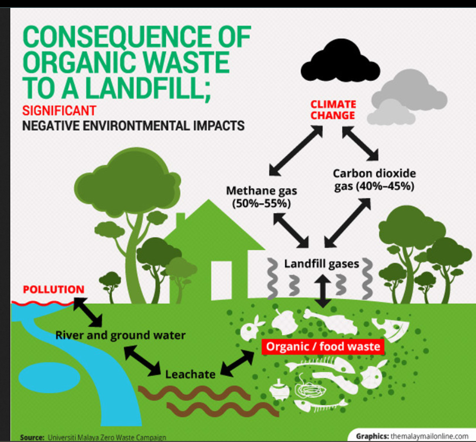
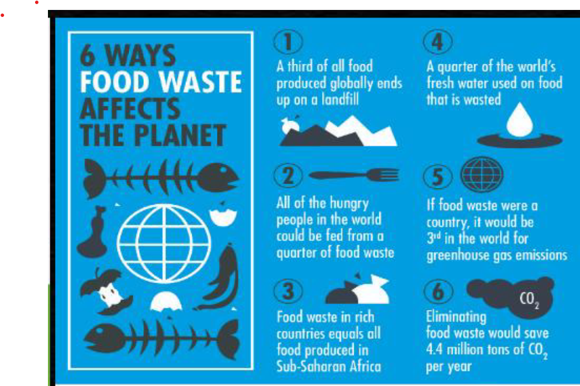
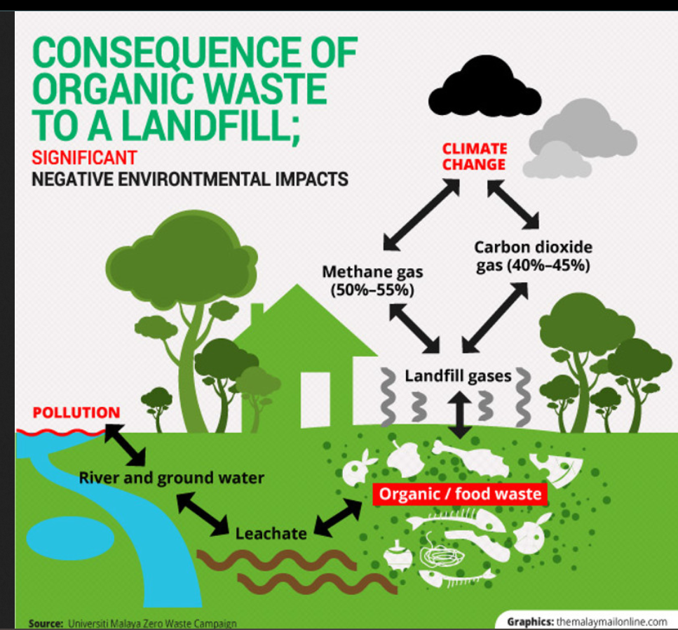
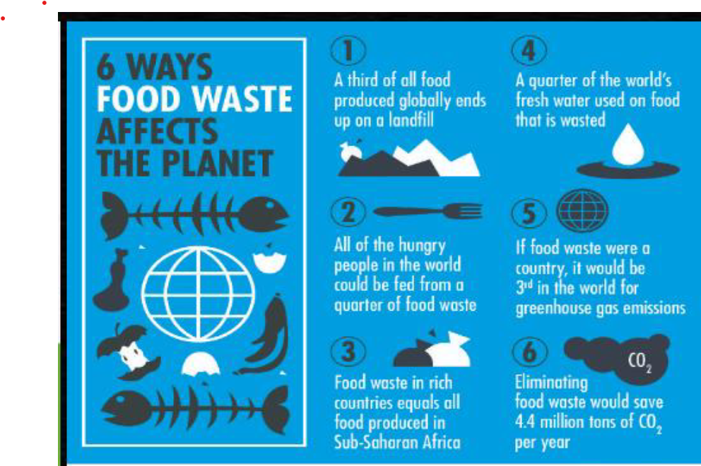

Info. about Food Wastage
An FAO study using compiled global food production and waste data from 2009 estimated that 32% of all food which is produced for human consumption globally is lost or wasted; this amounts to approximately 1.3 billion tons per year (FAO 2011). When this estimate is converted to calories, approximately 24%, or one out of every four food calories produced, is wasted (Lipinski et al. 2013). The majority of food loss and waste occur at different stages in the food supply chain for developed and developing regions. In industrialized countries, the majority of food is wasted at the retail and consumer stages, while in low-income countries, food is often lost in the production or processing stages of the supply chain before it even reaches the consumer (FAO 2011). Still, most food loss and waste comes from consumers in areas of mass food consumption (Cloke 2016). For instance, food waste at the consumer level in developed countries is estimated at 222 million tons, which is nearly as high as the total net food production (230 million tons) of sub-Saharan Africa (FAO 2011). Figure 1 displays some of the various causes of food loss and waste throughout the food supply chain.


Impact of Food Wastage on environment
Thus, ensuring the food security of an estimated 9.7 billion people by 2050 in an equitable and sustainable way is identified as one of the most crucial challenges facing society today (United Nations Department of Economic and Social Affairs 2015; Godfray 2010). The rising global population, along with shifting food consumption trends in developing nations (such as an increased demand for meat in South and East Asia), have spurred calls for a necessary increase in food production of 70%-100% by 2050 to achieve global food security, if food consumption trends follow current projected demand (FAO 2009; World Bank 2008; Royal Society of London 2009; Pretty et al. 2010; Conforti 2010). However, issues of global food security are multi-faceted, and increased food supply will not necessarily end world hunger. In fact, FAO data shows that enough food is already produced worldwide to provide adequate calories for the 805 million chronically undernourished individuals in the world today (OECD 2009; FAO 2014; Stringer 2016). Hunger remains a problem of access, obtaining an appropriate balance of nutrients, and purchasing power; these issues are further exacerbated during times of food price inflation and volatility, such as the 2008 food crisis (Stringer 2016; Bailey 2011; Holt-Giménez and Altieri 2013). These issues are a result of the transnational agribusiness corporations and financial trading companies controlling the global supply chain through the corporate food regime (Clapp et al. 2017; Sage 2013). These corporations use global issues of hunger simply as a profit motive to encourage investment in novel private technologies to dramatically increase food production by 2050, whether or not this increase will actually enhance the human right to food (Clapp et al. 2017; Sage 2013; De Schutter 2011). This research for a second Green Revolution has been framed nicely with a focus on sustainability, coined as 'sustainable intensification' by The Royal Society (2009). Sustainable intensification promotes technologies, such as genetic modification and precision application of fertilisers/pesticides, which allow for increased food production on the same area of land while ostensibly limiting environmental harm, decreasing agricultural contributors to climate change, and promoting global food security (The Royal Society 2009; Godfray et al. 2010).
 



Reducing Food Wastage

- Adopt a healthier, more sustainable diet
- Buy only what you need
- Pick ugly fruit and vegetables
- Understand food labelling
- Love your leftovers
- Put your food waste to use
- Keep fish populations afloat
- Keep our soils and water clean
- Use less water
- Sharing is caring
Life is fast-paced and preparing nutritious meals can be a challenge, but healthy meals don't have to be elaborate. The internet is full of quick healthy recipes that you can share with your family and friends.
Plan your meals. Make a shopping list and stick to it, and avoid impulse buys. Not only will you waste less food, you'll also save money!
Don't judge food by its appearance! Oddly-shaped or bruised fruits and vegetables are often thrown away because they don't meet arbitrary cosmetic standards. Don't worry - they taste the same! Use mature fruit for smoothies, juices and desserts.
There's a big difference between “best before” and “use-by” dates. Sometimes food is still safe to eat after the “best before” date, whereas it's the “use-by” date that tells you when it is no longer safe to eat. Check food labels for unhealthy ingredients such as trans fats and preservatives and
avoid foods with added sugar or salt.
If you don't eat everything you make, freeze it for later or use the leftovers as an ingredient in another meal.
Instead of throwing away your food scraps, compost them. This way you are giving nutrients back to the soil and reducing your carbon footprint.
Eat fish species that are more abundant, such as mackerel or herring, rather than those that are at risk of being overfished, like cod or tuna. Buy fish that has been caught or farmed sustainably, such as eco-labelled or certified fish.
Some household waste is potentially hazardous and should never be thrown in a regular rubbish bin. Items such as batteries, paints, mobile phones, medicine, chemicals, fertilizers, tires, ink cartridges, etc. can seep into our soils and water supply, damaging the natural resources that produce our food.
We can't produce food without water! While it's important that farmers use less water to grow food, reducing food waste also saves all the water resources that went into producing it. Reduce your water intake in other ways too: fixing leaks or turning off the water while brushing your teeth!
Donate food that would otherwise be wasted. For example, Apps can connect neighbours with each other and with local businesses so surplus food can be shared, not thrown away.